Lentes de realidad virtual
Una experiencia inmersiva a nivel individual, que se adapta mejor a las preferencias de cada usuario.
Cada modelo aprende del anterior. Hoy MECH‑3 está en desarrollo y el equipo ya prepara el siguiente paso.
El modelo de lanzamiento: voz, proyección, movimiento y narración con IA. Estableció toda la base — estructura de aluminio y coroplast, orquestador en Python y firmware en Arduino.
Cuatro incorporaciones que lo hicieron mucho más versátil y llamativo.
Más accesible, más portátil y más resistente. El modelo en el que trabaja el equipo actualmente.
Un modelo aún más universal, con mayor variedad de idiomas e indicadores más precisos.
MECH‑2 · QUÉ CAMBIÓ
Una experiencia inmersiva a nivel individual, que se adapta mejor a las preferencias de cada usuario.
Una apariencia más atractiva para el público general, adaptada a los sistemas y sensores mejorados.
Capacidad energética suficiente para sostener todos los sistemas con excelente autonomía durante un día.
Mayor compatibilidad con las funciones de audio, para evitar errores en la respuesta o en el guion.
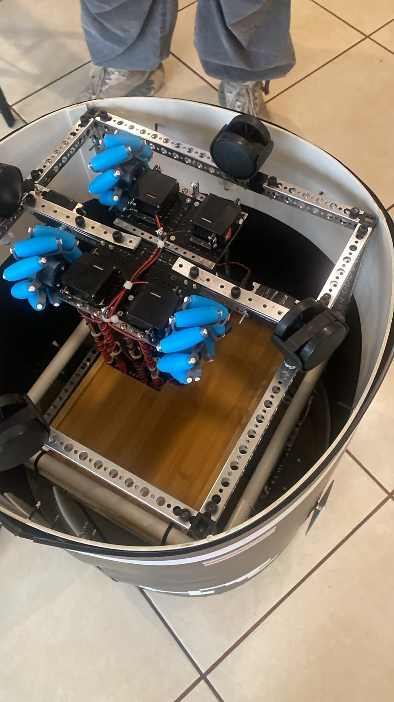
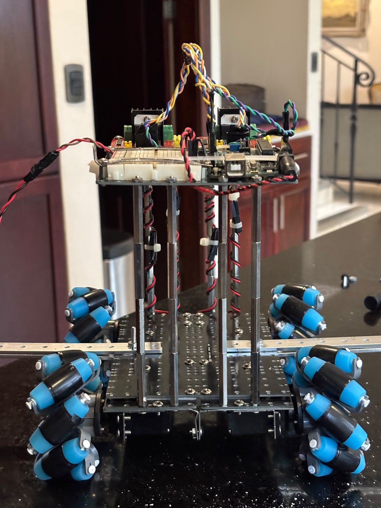
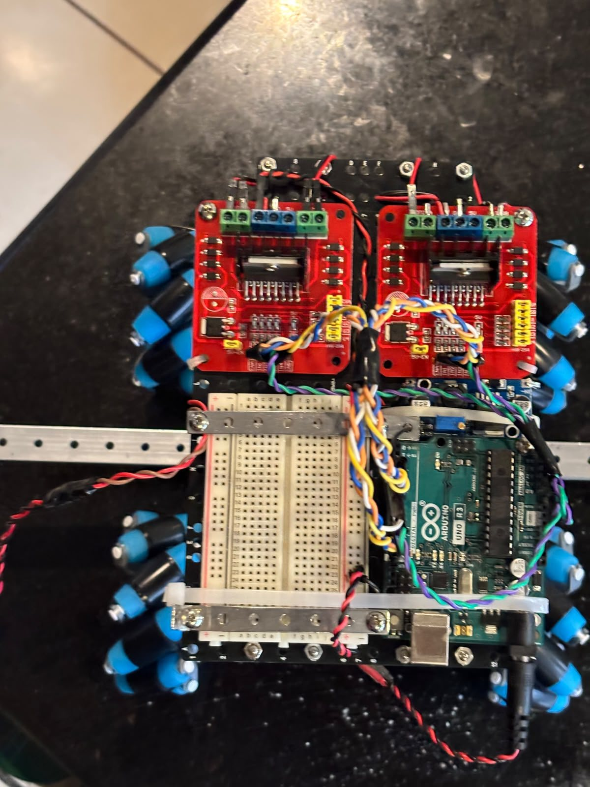
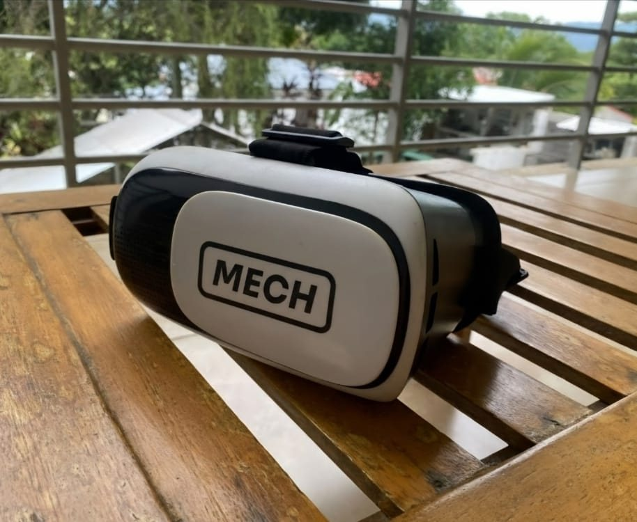
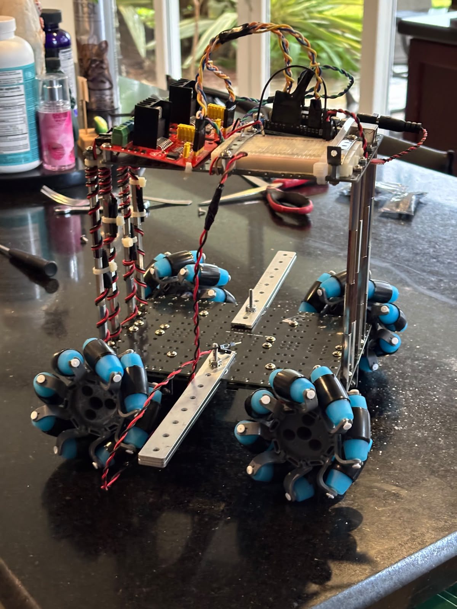
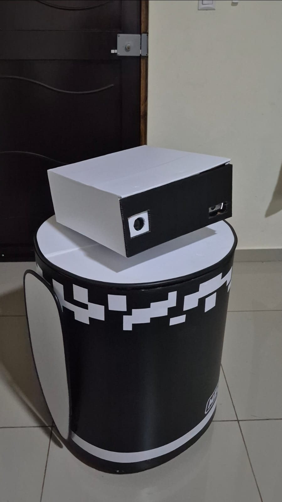
MECH‑3 · EN DESARROLLO
Los cinco aspectos que convierten a MECH‑3 en una versión más eficiente que sus predecesores.
La base inferior, la coraza, la parte superior y la nueva estructura interna de MECH‑3 se están modelando en Autodesk Fusion, incluida la estructura que sostiene la cabeza.
El modo subtítulos convierte al robot en una herramienta utilizable por más personas — un principio que el equipo quiere mantener en las siguientes generaciones.
DISEÑO 3D DE MECH‑3
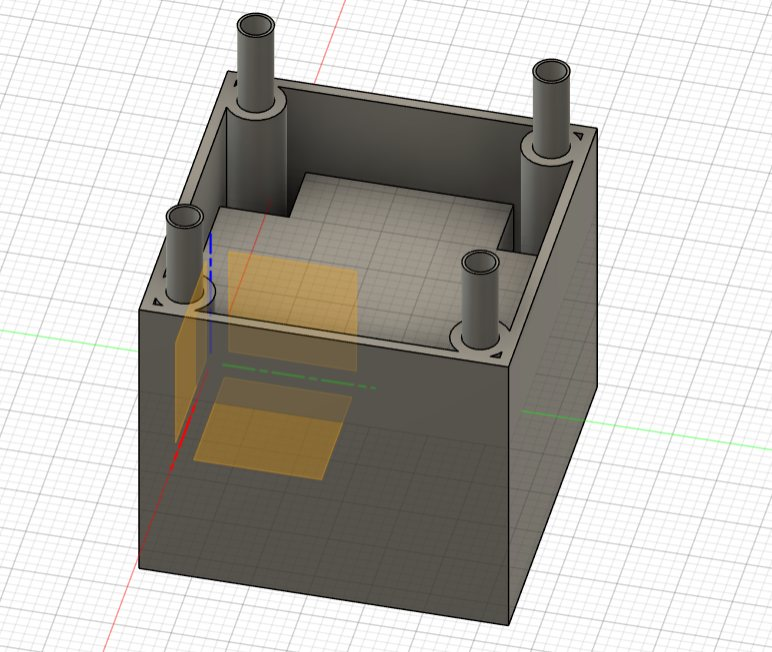
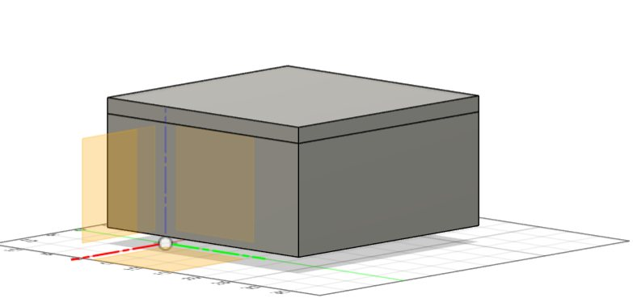
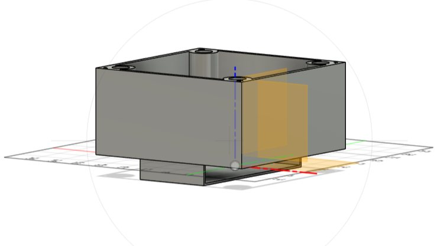
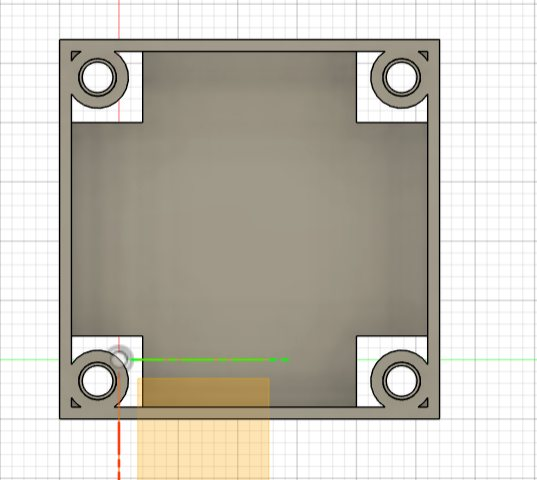
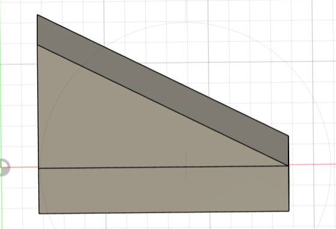
LO QUE VIENE
Un modelo aún más universal, con una mayor variedad de idiomas a los que puede acceder e indicadores más precisos que lo hagan todavía más versátil. El equipo seguirá buscando nuevas funciones según lo que reporten los usuarios.